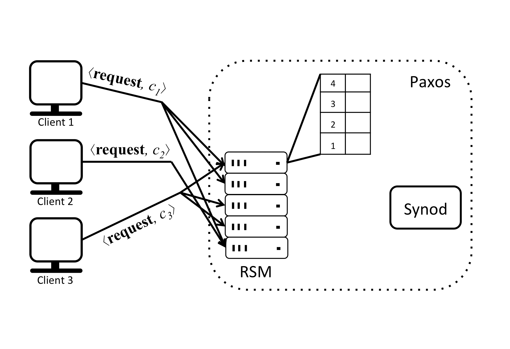

Why is Paxos used in distributed systems?
Paxos is a protocol for state machine replication in an asynchronous environment that admits crash failures.
A replicated state machine works by having multiple state machines, also called replicas, working in parallel, maintaining the same state. When the replicas receive requests from a client they update their state by executing the command in the request and reply to the client. This way, the state is automatically replicated by the replicas and in the event of a failure the state does not get lost, making the replicated state machine reliable.
It is easy for replicas to execute client commands in the same order and remain in sync if there is only one client or if multiple clients send their requests strictly sequentially as shown below:

In this example replicas receive requests from clients in the same order, execute the commands in the same order and respond to the clients, in effect staying in sync. For simplicity, it is assumed that a client can ignore duplicated responses.
But if multiple clients send requests to replicas in parallel, then different replicas might receive these requests in different orders and execute the commands in different orders, causing their local states to diverge from one another over time.
To prevent replicas from diverging in the presence of multiple clients sending requests in parallel, the order in which the client commands will be executed by replicas should be decided. We show this case below:

To decide the order in which the client commands will be executed the replicas can be thought of as having a sequence of slots that need to be filled with commands that make up the inputs to the state machine they maintain. In the example this sequence is shown as a table. Each slot is indexed by a slot number, starting from 1. Replicas receive requests from clients and assign them to specific slots, creating a sequence of commands. In the face of concurrently operating clients, different replicas may end up proposing different commands for the same slot. To avoid inconsistency, a consensus protocol chooses a single command from the proposals for every slot. In Paxos the subprotocol that implements consensus is called the multi-decree Synod protocol, or just Synod protocol for short. A replica awaits the decision before actually updating its sequence of commands in the table, executing the next command and computing a response to send back to the client that issued the request.
Essentially, the replicated state machine uses Paxos as an ordering entity which uses consensus to agree on which client command gets assigned to which slot. One has to make sure that the ordering entity itself is also reliable, that it can tolerate failures (at most f) just like the replicated state machine. To achieve reliability, Paxos is run by multiple specialized processes in a distributed fashion. This is not trivial because up to f processes running Paxos might fail at any time and, because there is no bound on timing for delivering and processing messages, it is impossible for other processes to know for certain that the process has failed.